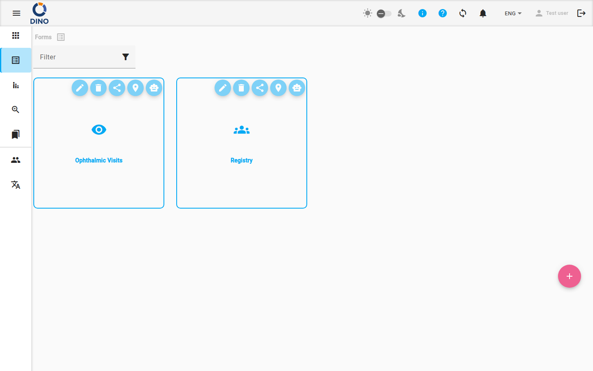
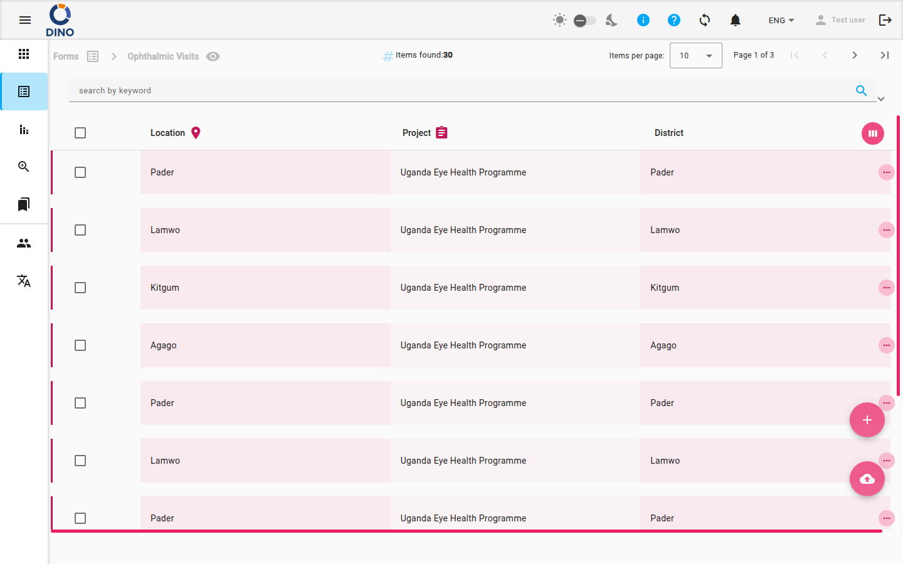

Formularios
La página Formularios es tu punto de partida para la recopilación de datos estructurados en Dino. Desde aquí puedes explorar, crear y gestionar esquemas de formularios, y luego ver y trabajar con los envíos recopilados a través de cada formulario.

La vista principal muestra una cuadrícula de mosaicos de esquemas de formularios. Cada mosaico muestra la etiqueta e icono del formulario. Al pasar el ratón por encima de un mosaico, se muestran botones de acción:
- Editar esquema – Modifica la estructura del formulario (campos, validación, métricas).
- Eliminar esquema – Elimina el esquema del formulario (y todos sus envíos).
- Compartir URL – Obtén un enlace público para permitir envíos externos.
- Ver mapa – Abre la vista de mapa para envíos con datos de ubicación.
- Chatear con tus datos – Usa la función DataChat para hacer preguntas sobre los envíos en lenguaje natural.
Tip
Las acciones disponibles en un mosaico dependen de tus permisos. Es posible que no veas todos los botones.
Para crear un nuevo esquema de formulario, haz clic en el botón flotante + en la parte inferior derecha. Accederás a la página Editar esquema de formulario para diseñar tu formulario.
Trabajar con envíos
Haz clic en un mosaico de esquema de formulario para acceder a su lista de envíos. Esta tabla muestra todas las entradas de datos recopiladas para ese esquema.

La lista incluye una barra de filtros que te permite buscar por palabra clave, rango de fechas, métricas, estado, usuario y más. También puedes guardar filtros predefinidos para reutilizarlos rápidamente.
Usa el botón de exportación para descargar los envíos en formato CSV o XLSX.

Acciones de fila
Haz clic en una fila para expandir sus detalles, o usa las acciones de fila (ver, editar, eliminar, imprimir como PDF, descargar como DOCX, imprimir credencial). Las acciones disponibles dependen de tus permisos y de la configuración del formulario.
Crear un nuevo envío
Haz clic en el botón flotante + en la página de lista para abrir un formulario vacío para el ingreso de datos.

Completa los campos y envía. El nuevo envío aparecerá en la lista.
Operaciones en lote
Selecciona varios envíos usando las casillas de verificación para realizar una eliminación o edición masiva (cambiar el mismo valor de campo en todas las entradas seleccionadas).
Vistas adicionales
- Mapa – Ver envíos con coordenadas geográficas en un mapa interactivo. Más información en Mapa de formularios.
- DataChat – Consulta tus datos de formularios usando lenguaje natural. Consulta DataChat para más detalles.
Warning
La función DataChat puede consumir créditos. Revisa el saldo de créditos de tu cuenta antes de usarla.